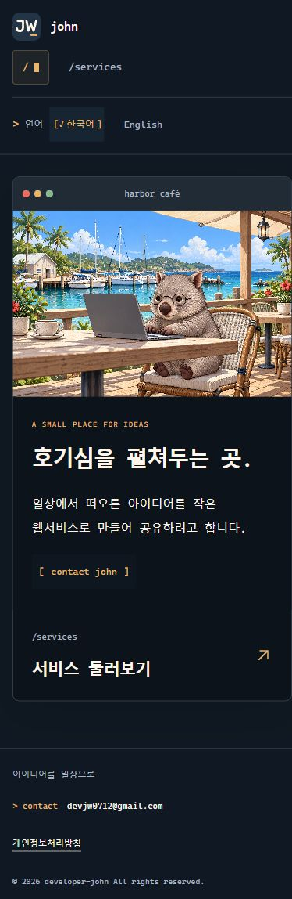
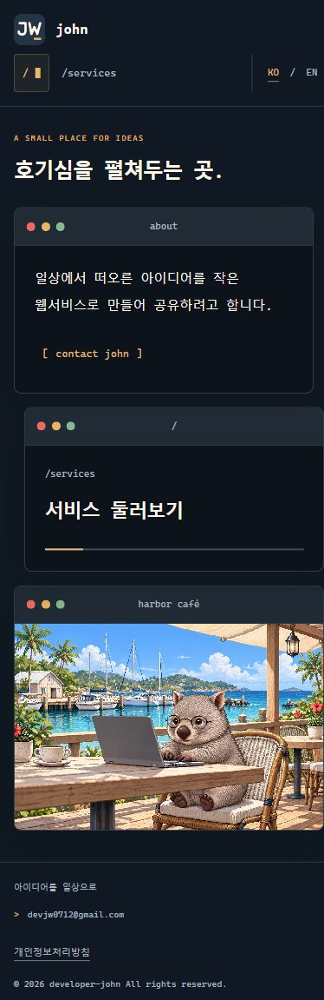
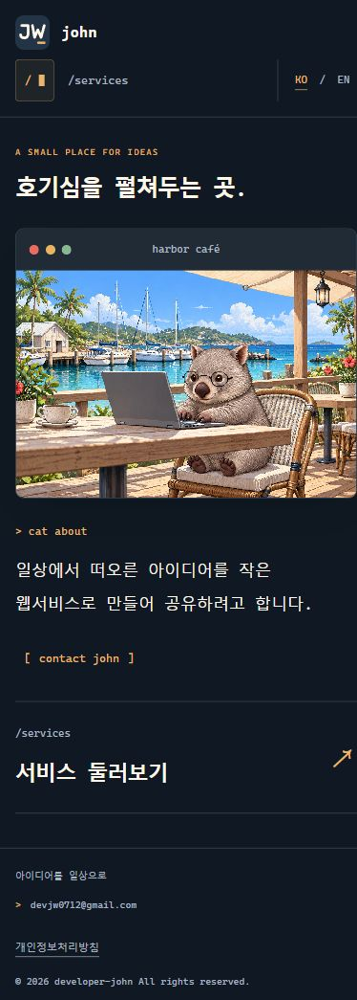
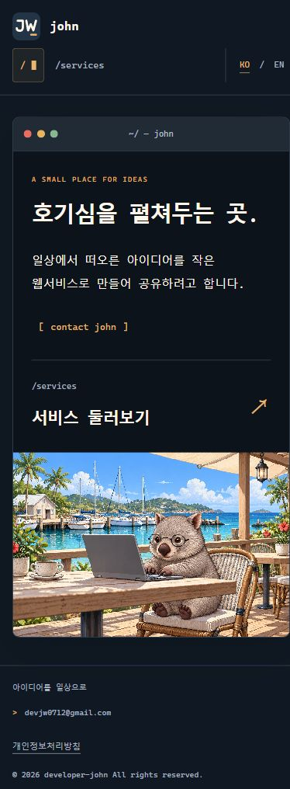
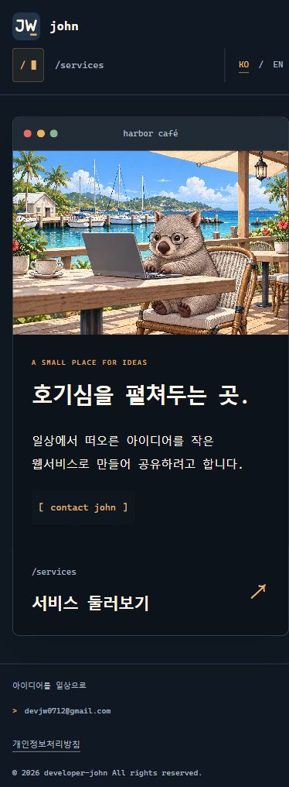
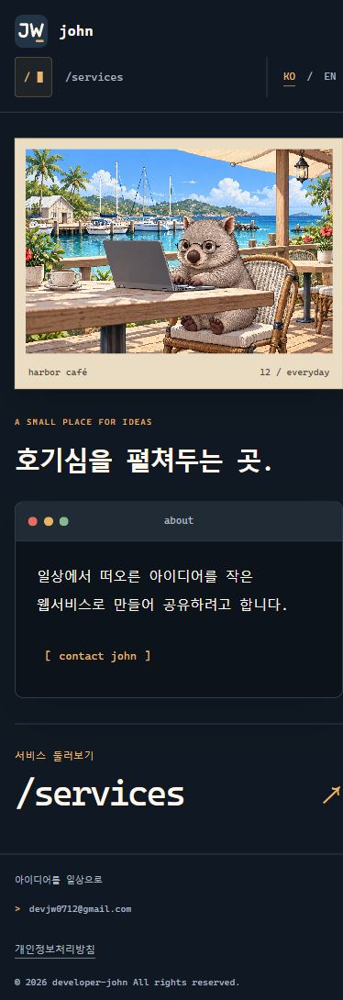

모바일에서는 이렇게 보여요.
390px 너비에서 캡처한 실제 화면입니다. 이미지를 누르면 크게 볼 수 있습니다.
현재04 사진 위의 소개
사진 → 소개 → 서비스
모바일에서는 사진과 소개를 세로로 분리


01겹친 창
소개 → 서비스 → 사진
창이 조금씩 엇갈린 배치


02넓은 사진창
사진 → 소개 → 서비스
항구 사진을 먼저 보여주는 구성


03하나의 창
소개 → 서비스 → 사진
하나의 창 안에서 세로로 이어지는 구성


04사진 위의 소개
사진 → 소개 → 서비스
모바일에서는 사진과 글이 겹치지 않게 분리


05항구의 엽서
엽서 사진 → 소개 → 서비스
크림색 테두리와 큰 서비스 링크 유지

